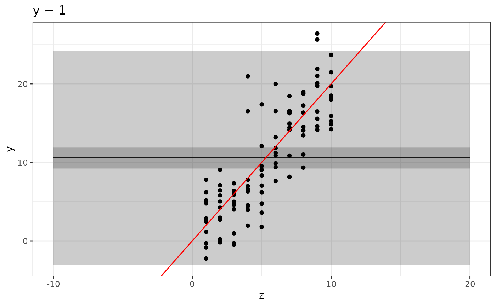
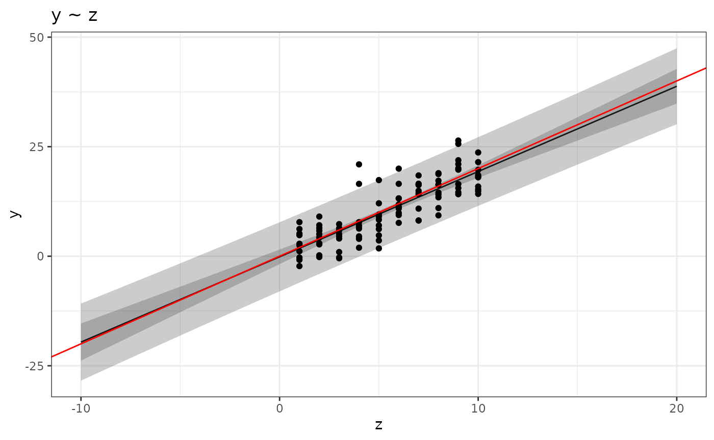
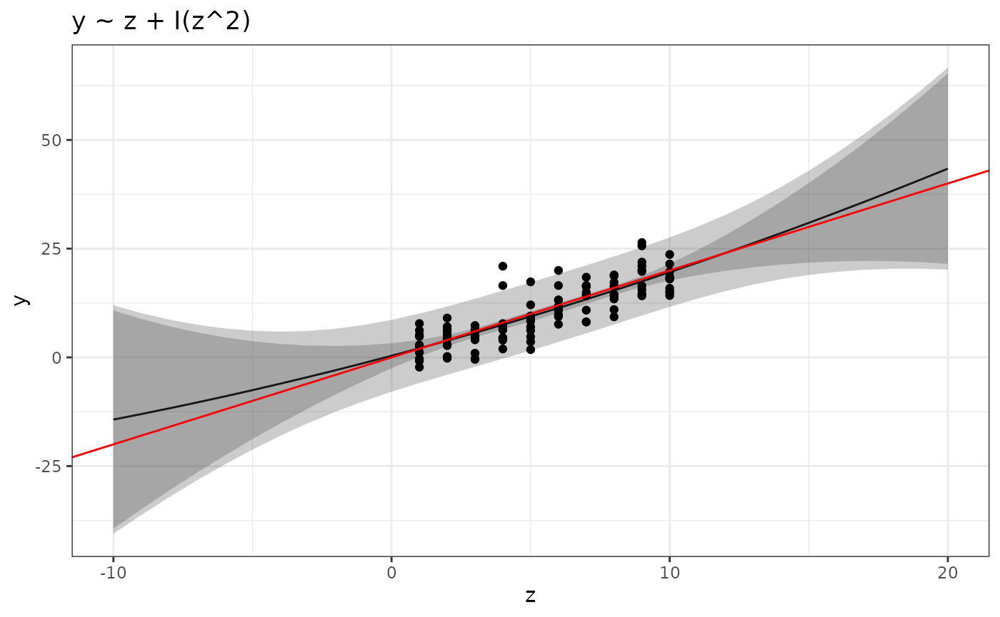

Tutorial 01: R and linear models (solutions)
Finn Lindgren
Source:vignettes/Tutorial01Solutions.Rmd
Tutorial01Solutions.RmdIn this lab session you’ll gradually develop R code for estimating multiple linear models, and plotting the results. You will not hand in anything, but you should keep your code script file for later use.
Startup
Regular startup on rstudio.cloud
- If you haven’t already done so, go to the Technical Setup page on Learn and either follow the links to sign up to rstudio.cloud, or install R version 4.1.2 and RStudio on your computer.
- In
rstudio.cloud, go to the “Statistical Computing” Workspace (in the left side menu) - Create a new project. Click on the project name at the top of the window to rename it to a descriptive name, for example
Lab01. - In the project
Consolewindow, rundevtools::install_github("finnlindgren/StatCompLab", dependencies = TRUE) - Go to the Learn page and open the lecture slides so you can refer to them easily during the lab. Read through the pages on formulas and functions before you continue with the lab.
Alternative local computer RStudio installation
- If you’ve followed the links on the Learn page about technical setup and installed R and RStudio, you have the option of running RStudio on your own computer.
- Choose a folder/location on your file system in which to store your course files, and in RStudio, create a new Project (
File\(\rightarrow\)New Project\(\rightarrow\)New Directory\(\rightarrow\)New Project) Make sure you choose a location where no part of the path contains any blank spaces, since that can sometimes cause problems. Name the folderLab01, for example. - Next time you want to work on the course files, use
File\(\rightarrow\)Open Projectinstead (or, if your system has linked.Rprojfiles to RStudio, you can open RStudio by opening the.Rprojfile in the project folder) - In the RStudio
Consolewindow, rundevtools::install_github("finnlindgren/StatCompLab", dependencies = TRUE) - Go to the Learn page and open the lecture slides so you can refer to them easily during the lab. Read through the pages on formulas and functions before you continue with the lab.
Some useful menu options, buttons, and keyboard shortcuts:
-
Configuring code syntax diagnostics:
Tools\(\rightarrow\)Global Options\(\rightarrow\)Code\(\rightarrow\)DiagnosticsThis allows you to turn on margin notes that automatically alert you to potential code problems.
-
Run the current line of code (or a selected section of code) and step to the next line:
Press the
Runbutton in the top right corner of the editor window, or PressCtrl+Enter -
Run all the code in the current script file:
Press the
Sourcebutton in the top right corner of the editor window, or PressCtrl+Shift+S, or PressCtrl+Shift+EnterNote: the first two options disable the normal automatic value printing; you’ll only see the ouput that is explicitly fed into
print(). The third option displays both the code and the results in the Console window. The
stylerpackage (should already be available onrstudio.cloud. Useinstall.packages("styler")in R if you’re running on a local installation). This will enable options to reformat your script code to (usually) more readable code, by pressing theAddinsbutton below the main program menu and choosing e.g.Style active file.
First steps
- Create a new R script file:
File\(\rightarrow\)New File\(\rightarrow\)R Script - Save the new R script file:
File\(\rightarrow\)Save, or PressCtrl+S, and choose a descriptive filename (e.g.lab_1_code.R)
During the lab, remember to save the script file regularly, to avoid losing any work (on both rstudio.cloud and regular RStudio, unsaved changes may still be remembered by the system, but it is much safer to explicitly save the files, and this will also be essential when we start git for version control).
There are several ways to view this tutorial document; either on the StatCompLab webpage, by running learnr::run_tutorial("Tutorial01", package = "StatCompLab") in RStudio, or vignette("Tutorial01", package = "StatCompLab")
Linear model estimation
We will start with the simple linear model \[ \begin{aligned} y_i &= \beta_0 + z_i \beta_z + e_i , \end{aligned} \] where \(y_i\) are observed values, \(z_i\) are observed values (“covariates”) that we believe have a linear relationship with \(y_i\), \(e_i\) are observation noise components with variance \(\sigma_e^2\), and \(\beta_0\), \(\beta_z\), and \(\sigma_e^2\) are model parameters.
First, generate synthetic data to use when developing the code for estimating models of this type. Enter the following code into your script file and run it with e.g. Ctrl+Enter:
z <- rep(1:10, times = 10)
data <- data.frame(z = z, y = 2 * z + rnorm(length(z), sd = 4))What does rep(), length(), and rnorm() do? Look at the help pages by running ?rep, ?rnorm, and ?length in the interactive Console window, or searching for them in the Help pane.
You can plot the data with “base graphics”,
plot(data$z, data$y)or with ggplot,
# Put the first two lines (library and theme_set) at the beginning of your script file.
# They only need to be run once in your R session!
# Load the ggplot2 package
library(ggplot2)
# Change the default theme (avoids grey background in the plots):
theme_set(theme_bw())
# Now we can plot:
ggplot(data) + geom_point(aes(z, y))For this simple plot, the ggplot approach may seem more complicated than necessary, but for more complex plots ggplot will make plotting much easier. In the code above, we first supply the data set, and then add information about how to plot it, using a grammar of graphics. See ?aes for some more information about the parameters controlling the aesthetics of the geom that adds points to the plot.
Estimate the model
Use the lm() function to estimate the model and save the estimated model in a variable called .
mod <- lm(y ~ z, data)Plot the result
Now we want to plot the linear predictor for the model as a function of \(z\), between \(z=-10\) and \(z=20\). First, create a new data.frame:
newdata <- data.frame(z = -10:20)Note that we don’t have any corresponding \(y\)-values yet!
Use predict(), plot(), and geom_line() to plot the linear predictor and the original data points in a single figure. Also add the true predictor with the help of geom_abline(intercept = ..., slope = ...) (use the col parameter to set a different color!). Create a new data frame and supply it directly to geom_line to override the original data:
Structure the code by adding a linebreak after each + operation.
Solution:
data_pred <- cbind(newdata,
data.frame(fit = predict(mod, newdata)))
ggplot(data) +
geom_point(aes(z, y)) +
geom_line(aes(z, fit), data = data_pred) +
geom_abline(intercept = 0, slope = 2, col = "red")Prediction intervals
Now modify the plotting code to also show prediction intervals. Hint: use the interval="prediction" parameter for predict(), and combine the output (which is now a matrix, and there is no need to convert it to a data.frame first) with newdata with the help of cbind. The resulting data.frame should have variables named z, fit, lwr, and upr, and the whole object should be called pred.
Solution:
Use the geom_ribbon(data = ???, aes(x = ???, ymin = ???, ymax = ???), alpha = 0.25) function to add the prediction intervals to the figure. The alpha parameter sets the “transparency” of the ribbon. Experiment with different values between 0 and 1. The result should look similar to this:
In “base graphics”, the following would produce a similar result, but without the shaded bands:
Multiple models
Note: This section introduces functions that will be discussed in more detail in week 2.
Let’s say we want to redo the data analysis using different models (after all, we only know the true model because we generated synthetic data!). Instead of copying the plotting code for each new model, let’s create a function instead! Start with the following skeleton code, and fill in the missing bits:
Solution:
plot_predictions <- function(x, newdata, xname = "x") {
pred <- cbind(newdata,
predict(x, newdata, interval = "prediction"))
ggplot(pred) +
geom_line(aes_string(xname, "fit")) +
geom_ribbon(aes_string(x = xname, ymin = "lwr", ymax = "upr"), alpha = 0.25)
}What should xname be set to when we call this function for our specific data? You should be able to run the following code to regenerate your previous figure:
plot_predictions(mod, newdata, xname = "z") +
geom_point(data = data, aes(z, y)) +
geom_abline(intercept = 0, slope = 2, col = "red")
Remark: Why can we use the + geom_* technique to add to the plot drawn by plot_predictions even though we don’t directly call ggplot() here? Every function returns its last computed object as output. In this case, that’s a ggplot object, and we can use it just as if we had spelled out the call to ggplot(). This also means that we could in principle write a function that adds features to a plot, taking an existing ggplot object as input, making complex plotting more structured and modular.
Further plotting details
You can change the plot labels and add a title by adding calls to xlab(), ylab(), and ggtitle() to the plot:
This passes any additional parameters through to the plot() function.
The provided solution has a further generalised version of the plotting function, that also adds the confidence intervals for the predictor curve to the plot.
Solution:
# Extended version of the solution:
plot_prediction <- function(x, newdata, xname = "x",
xlab = NULL, ylab = NULL, ...) {
if (is.null(xlab)) {
xlab <- xname
}
if (is.null(ylab)) {
ylab <- "Response"
}
pred <- cbind(newdata,
predict(x, newdata, interval = "prediction"))
pl <- ggplot() +
geom_line(data = pred,
aes_string(xname, "fit")) +
geom_ribbon(data = pred,
aes_string(xname, ymin = "lwr", ymax = "upr"), alpha = 0.25)
# Also add the confidence intervals for the predictor curve
conf <- cbind(newdata,
predict(x, newdata, interval = "confidence"))
pl <- pl +
geom_ribbon(data = conf,
aes_string(xname, ymin = "lwr", ymax = "upr"), alpha = 0.25)
# Add lables:
pl + xlab(xlab) + ylab(ylab)
}Quadratic model
Use your new function to plot the predictions for the quadratic model
The I() syntax means that you don’t have to create a separate data variable equal to the square of the z-values; the lm() function will create it for you internally. The result should look similar to this:
plot_prediction(mod2, newdata, xname = "z", ylab = "y") +
geom_point(data = data, aes(z, y)) +
geom_abline(intercept = 0, slope = 2, col = "red") +
ggtitle("Confidence and prediction intervals")
Multiple models
Finally, let’s estimate and plot predictions for four polynomial models, by first creating a list of formulas:
Look at the lecture slides and use the lapply() technique to estimate all four models and store the result in a variable called mods.
Solution:
formulas <- c(y ~ 1,
y ~ z,
y ~ z + I(z^2),
y ~ z + I(z^2) + I(z^3))
mods <- lapply(formulas, function(x) lm(x, data))Plotting multiple results
You can now use something like the following code to plot all the results:
for (k in seq_along(formulas)) {
pl <-
plot_prediction(mods[[k]], newdata, xname = "z", ylab = "y") +
geom_point(data = data, aes(z, y)) +
geom_abline(intercept = 0, slope = 2, col = "red") +
ggtitle(as.character(formulas[k]))
print(pl)
}
Look at the help text for seq_along()! Storing the plot as an object, pl, and then explicitly “printing” it is sometimes needed to ensure that all the plots are generated into a report document. Note: We will look at ways of combining multiple plots later.
Does the information displayed in the plots match your intuition about the different models?